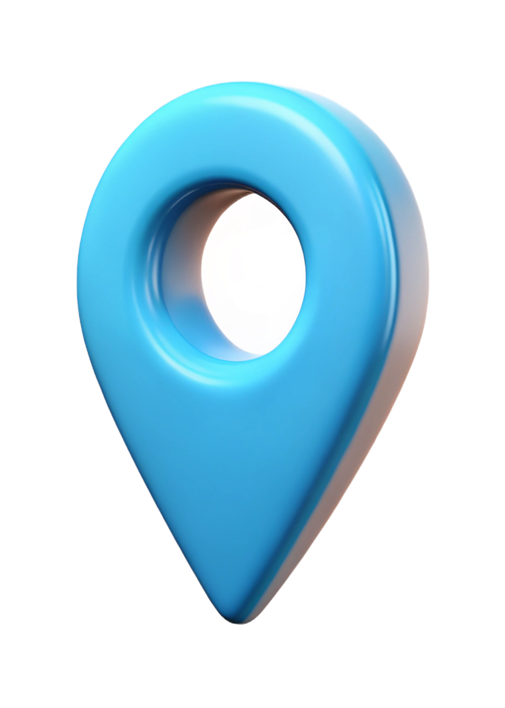

<ion-content>
    <ion-header style="z-index: 10">
  <ion-toolbar class="pt-4">
    <ion-buttons slot="start">
      <ion-button (click)="goBack()">
        <ion-icon name="arrow-back"></ion-icon>
      </ion-button>
    </ion-buttons>
    <ion-title>Select Location</ion-title>
  </ion-toolbar>
    <div class="d-flex p-0 align-items-center w-100 position-fixed">
          <ion-searchbar (click) = "openSearchLocationTab()"></ion-searchbar>
          <div class="me-4" (click)="getCurrentLocation()">
                      <svg xmlns="http://www.w3.org/2000/svg" height="26px" viewBox="0 -960 960 960" width="26px" fill="dark"><path d="M440-42v-80q-125-14-214.5-103.5T122-440H42v-80h80q14-125 103.5-214.5T440-838v-80h80v80q125 14 214.5 103.5T838-520h80v80h-80q-14 125-103.5 214.5T520-122v80h-80Zm40-158q116 0 198-82t82-198q0-116-82-198t-198-82q-116 0-198 82t-82 198q0 116 82 198t198 82Zm0-120q-66 0-113-47t-47-113q0-66 47-113t113-47q66 0 113 47t47 113q0 66-47 113t-113 47Zm0-80q33 0 56.5-23.5T560-480q0-33-23.5-56.5T480-560q-33 0-56.5 23.5T400-480q0 33 23.5 56.5T480-400Zm0-80Z"/></svg>
          </div>
  </div>
</ion-header>
  <div #map id="map" style="height: 100%;"></div>

  <div class="location-pin p-0" style="margin-top: 88px">
    <!--  -->
  <i class="bi bi-geo-alt-fill fs-1 text-dark"></i>
  </div>

  <ion-footer class="position-fixed bottom-0 w-100" style="border-radius: 20px; position: relative">
    <ion-toolbar class="">
      <ion-title class="mt-3 text-truncate" size="small">{{ currentAddress || 'Move map to select location' }}</ion-title>
      <ion-button class="ion-padding w-100" color="dark" (click)="confirmLocation()" [disabled]="!inside">
        @if(isPolygonLoading){
          <ion-spinner class="ms-2 fs-1"  name="crescent"></ion-spinner>
        } @else {
          @if(!inside){
               We are not Serviceable here😒
          } @else {
               Confirm Location
          }
        }
      </ion-button>
    </ion-toolbar>
    <div class="position-absolute" style="top: -40%; right: 20px; z-index: 10">
        <div (click)="backtoServiceArea()" class="refresh-button px-2 pt-1"><i class="bi bi-arrow-counterclockwise fs-2"></i></div>
  </div>
  </ion-footer>

  <!-- modal for add address start -->
  <ion-modal [isOpen]="isModalOpen" (didDismiss)="handleModalClose()">
    <ng-template>
      <ion-header>
        <ion-toolbar class="pt-4">
          <ion-buttons slot="start">
            <ion-button (click)="isModalOpen = false">
              <ion-icon name="arrow-back"></ion-icon>
            </ion-button>
          </ion-buttons>
          <ion-title>Add Address</ion-title>
        </ion-toolbar>
      </ion-header>
      <ion-content class="">
        <div class="mt-2 mx-4">
          <div>
            
          </div>
            <ion-list class="mt-2" style="border-radius: 20px; border: 1px solid gray">
      <ion-item style="border: 0px solid red" lines="none">
      <div class="unread-indicator-wrapper" slot="start"></div>
      <ion-label>
        <strong class="py-1 mt-1" style="border-radius: 10px">Selected Address</strong>&nbsp;<br>
        <ion-text>{{currentAddress}}</ion-text><br />
        <!-- <ion-note color="medium" class="ion-text-wrap text-truncate">dhceeeeyhefefefefefef</ion-note> -->
      </ion-label>
      <div class="metadata-end-wrapper me-2" slot="end">
        <ion-button (click)="changeSelectedAddress()" fill="outline" color="dark">change</ion-button>
        <!-- <i class="bi bi-check-circle-fill fs-5" color="dark"></i> -->
      </div>
    </ion-item>
    </ion-list>
    <p class="my-2 ms-3"><ion-text>Add Address</ion-text></p>
     <ion-item class="addressField mt-2" lines="none">
    <ion-input placeholder="House number" [(ngModel)]="houseNo" value=""></ion-input>
  </ion-item>
     <ion-item class="addressField mt-2" lines="none">
    <ion-input placeholder="House name/ Apartment name (Optional)" [(ngModel)]="HouseName" value=""></ion-input>
  </ion-item>
     <ion-item class="addressField mt-2" lines="none">
    <ion-input placeholder="Nearest landmark" [(ngModel)]="landmark" value=""></ion-input>
  </ion-item>
      <p class="my-2 ms-3"><ion-text>Select Label</ion-text></p>
      <ion-chip class="m-0" [outline]="true" [ngClass]="selectedLabel == 'home'? 'chipStyle': ''" (click)="chipSelected('home')" value="home">Home</ion-chip>
      <ion-chip [outline]="true" (click)="chipSelected('work')" [ngClass]="selectedLabel == 'work'? 'chipStyle': ''">Work</ion-chip>
      <ion-chip [outline]="true" (click)="chipSelected('other')" [ngClass]="selectedLabel == 'other'? 'chipStyle': ''">Other</ion-chip>
          <p class="my-2 ms-3"><ion-text>Add Receiver details</ion-text></p>
 <ion-item class="addressField mt-2" lines="none">
    <ion-input placeholder="Receiver's name (Optional)" value="" [(ngModel)]="receiverName"></ion-input>
  </ion-item>
     <ion-item class="addressField mt-2" lines="none">
    <ion-input placeholder="Receiver's Contact number (Optional)" value="" [(ngModel)]="receiverContact"></ion-input>
  </ion-item>

        </div>
        <div style="height: 300px"></div>
        
      </ion-content>
      <ion-footer class="position-fixed bottom-0">
        <div class="mx-2">
      <ion-button class="ion-padding w-100" color="dark" [disabled]="isLoading || isDisabled" (click)="createAddress()">Save address
        @if (isLoading) {
        <ion-spinner class="ms-2"  name="crescent"></ion-spinner>
}
      </ion-button>
        </div>
        </ion-footer>

        <ion-toast
    [isOpen]="isToastOpen"
    [message]="toastMessage"
    [duration]="3000"
  ></ion-toast>

    </ng-template>

  </ion-modal>
  <!-- modal for add address end -->

  <!-- modal for search address start -->
   <ion-modal [isOpen]="isSearchModalOpen" (didDismiss)="handleModalClose()">
    <ng-template>
      <ion-header>
        <ion-toolbar class="pt-4 mt-4">
          <ion-buttons slot="start">
            <ion-button (click)="isSearchModalOpen = false">
              <ion-icon name="arrow-back"></ion-icon>
            </ion-button>
          </ion-buttons>
          <!-- <ion-title>Search Location</ion-title> -->
          <div class="d-flex p-0 align-items-center w-100">
          <ion-searchbar (click) = "isSearchModalOpen = true"
          placeholder="Search location"
  (ionInput) = "onSearchChange($event)"
  debounce="500"
          ></ion-searchbar>
  </div>
        </ion-toolbar>
      </ion-header>
      <ion-content [fullscreen]="true">
        @if (suggestions.length) {
<ion-list>
  <ion-item *ngFor="let place of suggestions">
    {{ place.description }}
  </ion-item>
</ion-list>
        } @else {
          <app-nodata></app-nodata>
        }
      </ion-content>
    </ng-template>
   </ion-modal>
   <!-- modal for search address ends -->

</ion-content>
